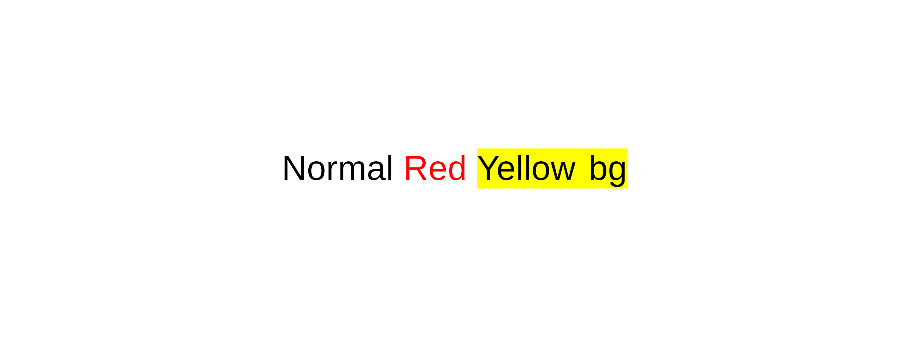
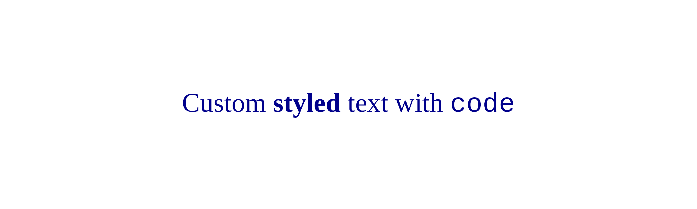
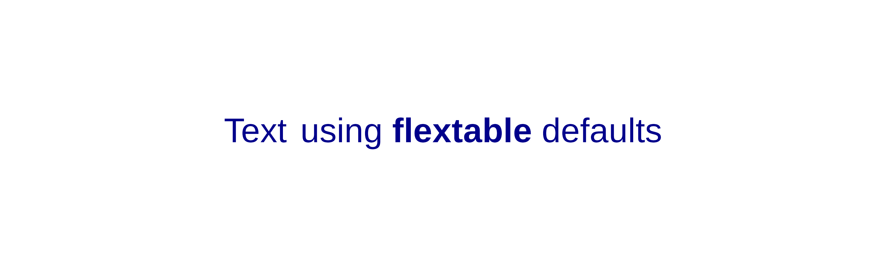
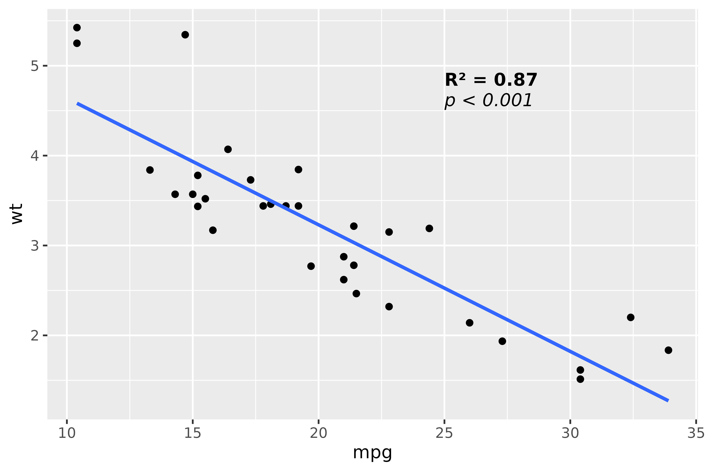

This vignette covers advanced topics: creating grobs directly, configuring text properties, embedding images, and ‘flextable’ integration.
Creating grobs with md_grob()
md_grob() converts markdown text to a grid graphics
object (grob).
Basic usage
gr <- md_grob("This is **bold** and *italic* text.")
grid.newpage()
grid.draw(gr)Automatic text wrapping
Use width to enable line wrapping:
long_text <- "This is a **long text** that will be automatically
wrapped across multiple lines using the `width` parameter."
gr <- md_grob(long_text, x = 0.1, hjust = 0, width = 3)
grid.newpage()
grid.draw(gr)Creating grobs with chunks_grob()
chunks_grob() converts ‘flextable’ paragraph objects to
grobs. Use this when you need superscripts, subscripts, or custom
colors.
chunks <- as_paragraph(
as_chunk("E = mc"),
as_sup("2")
)
gr <- chunks_grob(chunks)
grid.newpage()
grid.draw(gr)Complex formatting
chunks <- as_paragraph(
as_chunk("The speed of light is "),
as_b("c"),
as_chunk(" = 3\u00D710"),
as_sup("8"),
as_chunk(" m/s")
)
gr <- chunks_grob(chunks)
grid.newpage()
grid.draw(gr)Colored and highlighted text
chunks <- as_paragraph(
as_chunk("Normal "),
colorize(as_chunk("Red "), color = "red"),
as_highlight(as_chunk("Yellow bg"), color = "yellow")
)
gr <- chunks_grob(chunks)
grid.newpage()
grid.draw(gr)
Configuring text properties
Use default_text_props() to customize font size, family,
and color:
props <- default_text_props(
font_size = 14,
font_family = "serif",
font_color = "darkblue",
code_font_family = "mono"
)
gr <- md_grob("Custom **styled** text with `code`", text_props = props)
grid.newpage()
grid.draw(gr)
Available parameters
| Parameter | Description | Default |
|---|---|---|
font_size |
Font size in points | 11 |
font_family |
Font family | “Helvetica” |
font_color |
Text color | “black” |
code_font_family |
Font for inline code | “mono” |
line_spacing |
Line height multiplier | 1.2 |
img_baseline_ratio |
Image vertical alignment | 0.15 |
Integration with flextable theming
Text properties can also be set globally via ‘flextable’:
set_flextable_defaults(
font.size = 14,
font.color = "darkblue"
)
gr <- md_grob("Text using **flextable** defaults")
grid.newpage()
grid.draw(gr)
# Reset defaults
init_flextable_defaults()Embedding images
In markdown
Use standard markdown image syntax:
img_path <- system.file("img", "Rlogo.png", package = "png")
text_with_img <- sprintf("The R logo:  in text.", img_path)
gr <- md_grob(text_with_img)
#> Warning: Image file not found.
#> ✖ Cannot find file .
grid.newpage()
grid.draw(gr)With flextable chunks
Use as_image() for explicit size control:
img_path <- system.file("img", "Rlogo.png", package = "png")
chunks <- as_paragraph(
as_chunk("The R logo "),
as_image(src = img_path, width = 0.3, height = 0.3),
as_chunk(" is iconic.")
)
gr <- chunks_grob(chunks)
#> Warning: Image file not found.
#> ✖ Cannot find file .
grid.newpage()
grid.draw(gr)Image baseline alignment
The img_baseline_ratio parameter controls vertical image
alignment:
-
0: Image bottom at text baseline -
0.15: (default) Similar to text descent proportions -
0.35: Image centered on text vertical center -
0.5: Image centered on baseline
props <- default_text_props(img_baseline_ratio = 0.35)
gr <- md_grob(
sprintf("Text  centered", img_path),
text_props = props
)
#> Warning: Image file not found.
#> ✖ Cannot find file .
grid.newpage()
grid.draw(gr)Using grobs in ggplot2
Use annotation_custom() to add grobs to ggplot2:
library(ggplot2)
stats_grob <- md_grob(
"**R\u00B2 = 0.87**\n\n*p < 0.001*",
hjust = 0,
vjust = 1
)
ggplot(mtcars, aes(mpg, wt)) +
geom_point() +
geom_smooth(method = "lm", se = FALSE) +
annotation_custom(
grob = stats_grob,
xmin = 25, xmax = 35,
ymin = 4.5, ymax = 5.5
)
Flextable integration
Use as_paragraph_md() for markdown in table cells:
ft <- flextable(head(iris, 3))
ft <- mk_par(ft, j = 1, part = "header",
value = as_paragraph_md("*Sepal* **Length**"))
autofit(ft)Sepal Length |
Sepal.Width |
Petal.Length |
Petal.Width |
Species |
|---|---|---|---|---|
5.1 |
3.5 |
1.4 |
0.2 |
setosa |
4.9 |
3.0 |
1.4 |
0.2 |
setosa |
4.7 |
3.2 |
1.3 |
0.2 |
setosa |